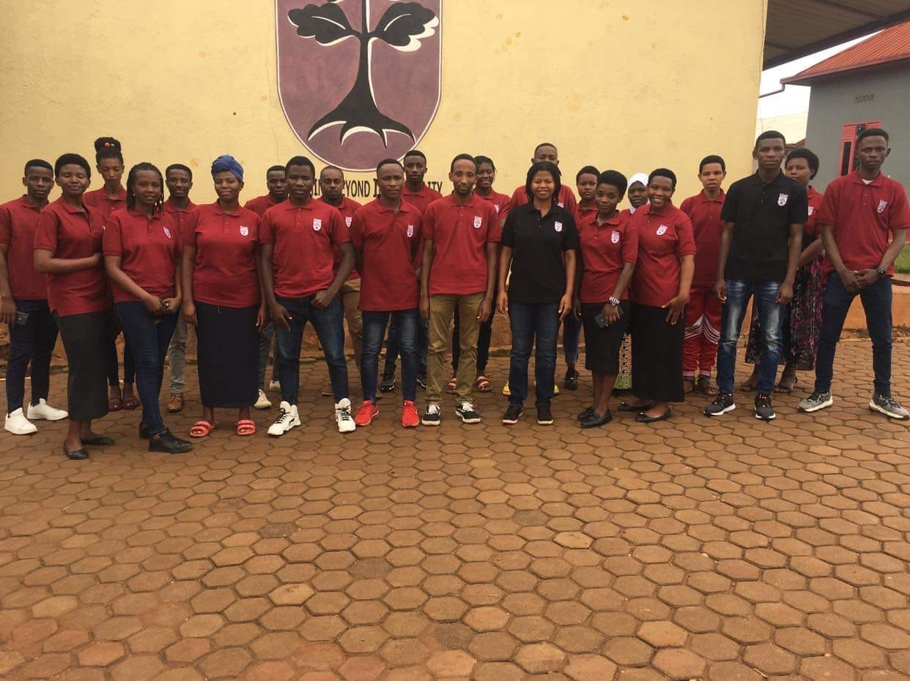
Crimson Academy of Kagina is a Christian primary school in Kamonyi District, Rwanda, serving 780 students from nursery through Primary 6.
Children carry the hopes of the future. Providing access and opportunity to educate children around the world is our aim and purpose. Crimson Academy will embolden children and communities to reach beyond impossibilities and transform the future for the better.
We are committed to facilitating learning experiences that help our students achieve their greatest potential and adapt to a diverse, ever-changing society. We aspire to give children a sense of understanding and compassion for others, and the courage to act on their beliefs.
We stress the total development of each child: spiritual, moral, intellectual, social, emotional, and physical.
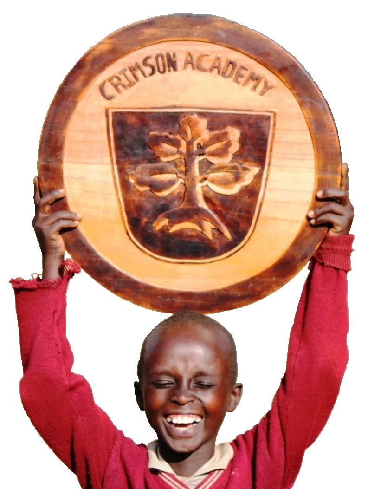
Truth, Discipline and Service are practised. Faith, Hope and Love are what grows where they meet.
Faith is not a subject taught in one period a week — it shapes how teachers speak to children, how discipline is handled, and how the school serves the village around it.
The six values described above are drawn directly from scripture, and they are taught and referred to explicitly rather than left implicit.
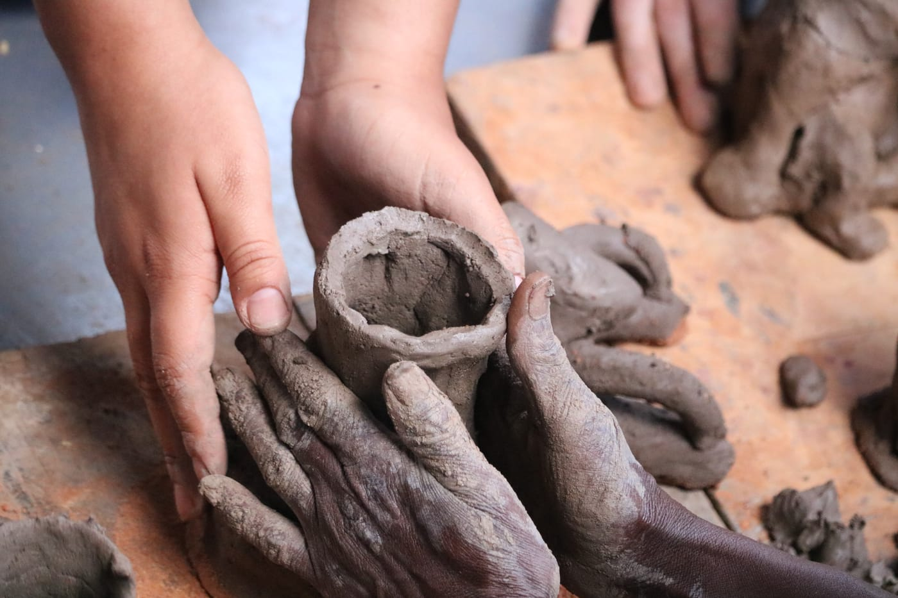
Crimson Academy did not start with a building. It started with a visit, and with parents in a Rwandan village asking for something their children could not otherwise get. Fifteen years, eight chapters.
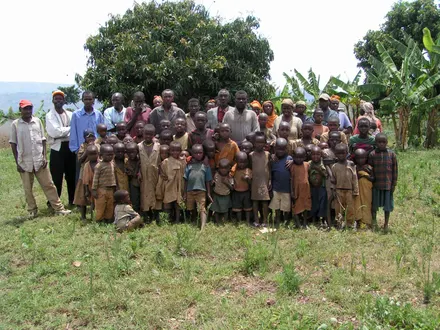
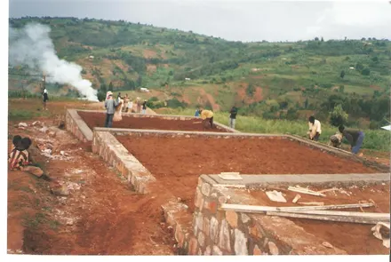
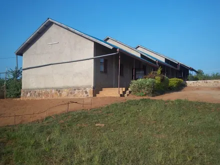
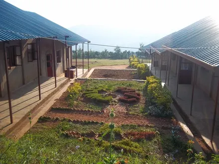
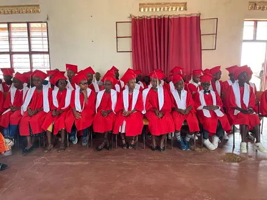
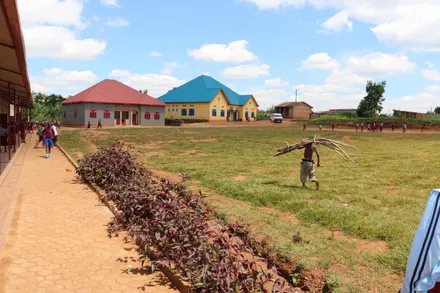
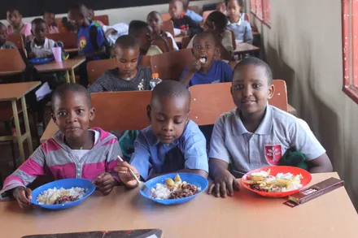
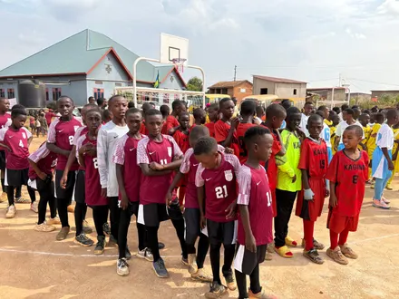


Prospective families are welcome to tour the campus, meet teachers, and see classrooms in session. Email us to arrange a time.